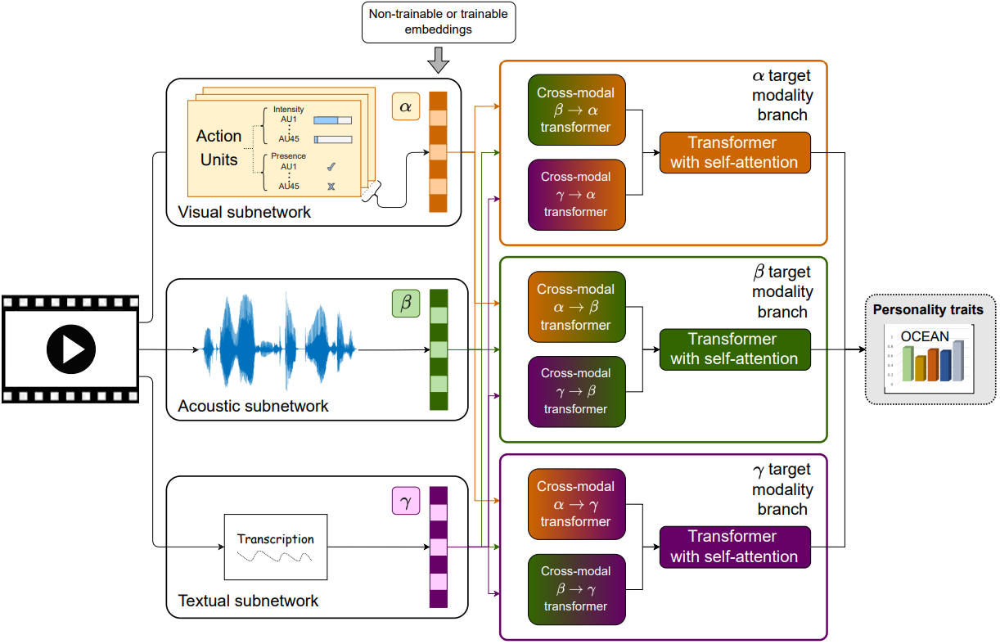
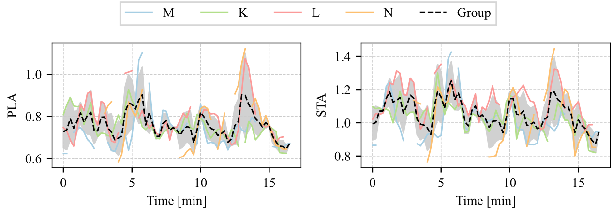
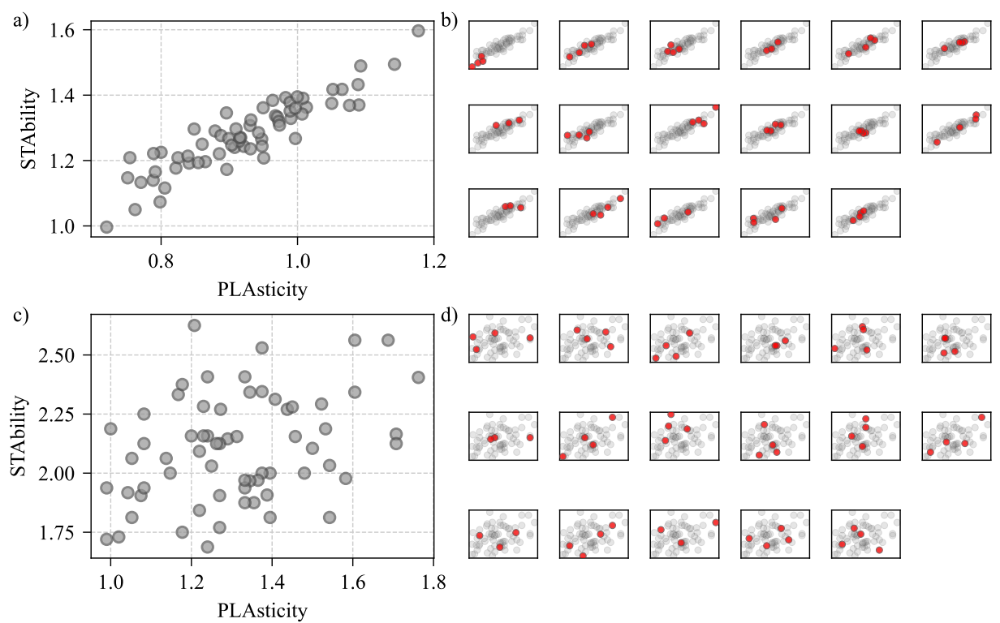

Kristian Fenech, Ádám Fodor, Sean P. Bergeron,
Rachid R. Saboundji, Catharine Oertel, András Lőrincz
Dyadic and small group collaboration is an evolutionary advantageous behaviour and the need for such collaboration is a regular occurrence in day to day life. In this paper we estimate the perceived personality traits of individuals in dyadic and small groups over thin-slices of interaction on four multimodal datasets. We find that our transformer based predictive model performs similarly to human annotators tasked with predicting the perceived big-five personality traits of participants. Using this model we analyse the estimated perceived personality traits of individuals performing tasks in small groups and dyads. Permutation analysis shows that in the case of small groups undergoing collaborative tasks, the perceived personality of group members clusters, this is also observed for dyads in a collaborative problem solving task, but not in dyads under non-collaborative task settings. Additionally, we find that the group level average perceived personality traits provide a better predictor of group performance than the group level average self-reported personality traits.
Using estimates on perceived personality applied to both small groups and dyads involved in a task oriented interaction we examine the time-averaged personality states of group members in order to address the following research questions:
In order to approach these research questions we examine multiple datasets which focus on dyadic and small group interaction. Importantly, we justify the generalisability of the developed method we make use of the provided perceived personality annotations present in the MULTISIMO dataset. For the dyadic case we analyse the UDIVA dataset and for small groups the Emergent Leader (ELEA) and AMI meeting corpus. Both the UDIVA and AMI meeting corpus provide the opportunity to explore the potential changes in perceived personality over different tasks. Despite the limitation that the ELEA dataset provides only a single interaction session for each group, it provides a useful metric of group performance for the completed task.
These features are used with a transformer based model. The architecture is built on multi-head attention units that transform one modality to another. As we utilise three unique modalities, the model comprises of six cross-modal transformers. The final output of the network is the prediction of the big-five personality traits, however we use emotional stability represented as the inverse neuroticism score.
Estimation of the big-five traits is made over a sliding window of duration 15 seconds and a stride duration of 1 second, providing a snap-shot of the perceived personality traits. From the big-five traits we determine a higher-order two-factor meta-trait representation of personality. These meta-traits are plasticity (PLA) and stability (STA), the former combining the traits of openness and extroversion and the latter conscientiousness, agreeableness and emotional stability.
Illustrative sample of the temporal changes in the perceived personality meta-traits of plasticity (left) and stability (right). Coloured curves: Trait estimation for individual participants, where each participant is assigned a letter in place of a name for anonymisation in the dataset. Missing line segments: non-speaking intervals. Dashed line: average over participants. The grey shaded area gives the standard deviation of the individual values. Perceived personality tend to move together over time.
On the following figure stability and plasticity values are visualized. a) First-impression personality state averaged over the full session duration. b) Each subplot shows the original averages as seen in a). Traits corresponding to the members of other group are highlighted by the red circles. c) Plasticity and stability determined from self reported big-five traits, re-scaled between 0 and 1. d) Each subplot shows the original averages as seen in c). Traits corresponding to the members of other group are highlighted by the red circles. The observed group effect is strong in the first-impression personality state.
If you found our research helpful or influential please consider citing:
@misc{fenech2022perceived,
title={Perceived personality state estimation in dyadic and small group interaction with deep learning methods},
author={Kristian Fenech and Ádám Fodor and Sean P. Bergeron and Rachid R. Saboundji and Catharine Oertel and András Lőrincz},
year={2022},
eprint={2211.04979},
archivePrefix={arXiv},
primaryClass={cs.HC}
}